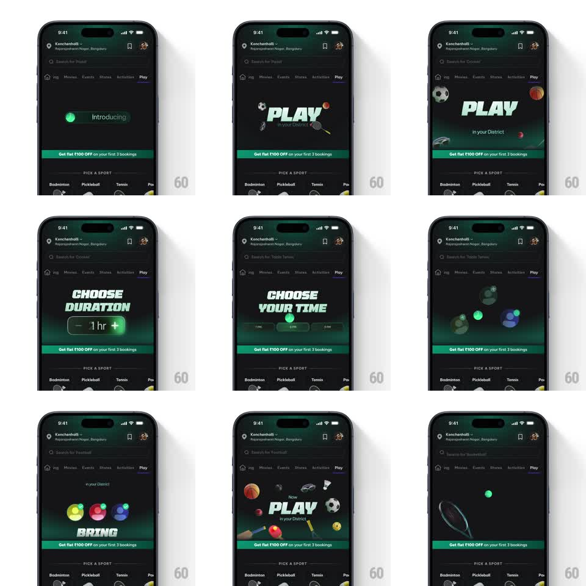

Media
Frame-by-frame

Rebuild this animation 1:1: District's Play intro header - an auto-playing banner that loops through the booking steps (sport, duration, time, squad) with bold italic titles and floating gear, over a fixed green offer strip.

Rebuild this animation 1:1: District's Play intro header - an auto-playing banner that loops through the booking steps (sport, duration, time, squad) with bold italic titles and floating gear, over a fixed green offer strip. ## Integration Integration: stack-agnostic spec - springs given as stiffness/damping, timed motions as duration + curve; map every value to your framework and animation library of choice. ## Scene District Play tab, dark green-tinted header: a banner area above the "PICK A SPORT" row and the fixed green strip "Get flat ₹100 OFF on your first 3 bookings". Steps: "PLAY in your District" with floating balls and equipment; "CHOOSE DURATION" with a "- 0 hr +" stepper; "CHOOSE YOUR TIME" with time pills (7PM / 8PM / 9PM); "BRING YOUR SQUAD" with colored avatar circles. ## Motion spec Pattern: auto-playing looping header that morphs through four booking steps. - Each step holds ~1.6s, then its title scales down and blurs out (scale 1 -> 0.85, blur 0 -> 10px, opacity -> 0, 300ms) while the next title springs in from 1.15 -> 1 with blur clearing (350ms, spring ~280/16). - Props animate with their step: balls drift across the banner on slow arcs (translate + slight rotate, 1.6s per pass); the duration stepper's value ticks 0 -> 1 -> 2 (300ms per tick with a number roll); the time pills light up left to right (150ms apart, green fill sweep); the squad avatars pop in (scale 0 -> 1, spring ~400/15, 90ms stagger). - The banner crossfades its background tint between steps (deep green <-> near-black, 400ms). - After the squad step, everything fades (300ms) and the loop restarts with the PLAY title and gear confetti drifting down. - The green offer strip and PICK A SPORT row below never animate - they're outside the loop. ## Calibration - Titles are heavy italic condensed caps, mint-green on dark - exact per step. - The loop is seamless: the last frame's fade matches the first frame's start state. ## Reduced motion Static PLAY header; no loop. ## Don't miss - The stepper's + / - controls and the time pills are drawn as real UI, not illustrations. - Gear (balls, shuttlecock, car toy) floats at different depths - parallax between layers on each transition.